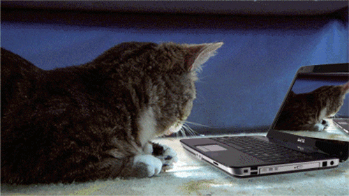

The Creation of ENIAC

The ENIAC was developed in 1946, way ahead of it's time. It was the brain child of John Presper Eckert and John W. Mauchly.
he ENIAC, also known as Electronic Numerical Integrator and Computer, was built on the campus of the University of Pennsylvania.
The creators of ENIAC described it as the "first genreal-purpose electronic computer".It was formally accepted by the U.S. Army Ordnance Corps in July 1946. ENIAC was shut down on November 9, 1946 for a refurbishment and a memory upgrade,
and was transferred to Aberdeen Proving Ground, Maryland in 1947. There, on July 29, 1947, it was turned on and was in continuous operation
until 11:45 p.m. on October 2, 1955.
IBM's Personal Computer

The IBM Personal Computer, commonly known as the IBM PC, is the original version of the IBM PC compatible hardware platform.
It is IBM model number 5150 and was introduced on August 12, 1981. It was created by a team of engineers and designers under the
direction of Philip Don Estridge of the IBM Entry Systems Division in Boca Raton, Florida. The generic term "personal computer" ("PC") was in use years before 1981, applied as early as 1972 to the Xerox PARC's Alto,
but the term "PC" came to mean more specifically a desktop microcomputer compatible with IBM's Personal Computer branded products. The machine
was based on open architecture, and third-party suppliers sprang up to provide peripheral devices, expansion cards, and software.
IBM had a substantial influence on the personal computer market in standardizing a platform for personal computers, and "IBM compatible" became an important criterion for sales growth.
Only the Apple Macintosh family kept a significant share of the microcomputer market after the 1980s without compatibility to the IBM personal computer.
Apple's Macintosh

The Macintosh is a family of personal computers designed, manufactured and sold by Apple Inc. since January 1984.
The original Macintosh was the first mass-market personal computer that featured a graphical user interface, built-in screen and mouse.
Apple sold the Macintosh alongside its popular Apple II family of computers for almost ten years before they were discontinued in 1993.
Early Macintosh models were expensive, hindering its competitiveness in a market dominated by the Commodore 64 for consumers, as well as the IBM Personal Computer and its accompanying clone market for businesses.
Macintosh systems found success in education and desktop publishing and kept Apple as the second-largest PC manufacturer for the next decade.
In the early 1990s, Apple introduced the Macintosh LC II and Color Classic which were price-competitive with Wintel machines at the time. Apple consolidated nearly twenty models in mid-1997 down to four in mid-1999: The Power Macintosh G3, iMac, 14.1" PowerBook G3, and 12" iBook.
All four products were critically and commercially successful due to their high performance, competitive prices and aesthetic designs, and helped return Apple to profitability.
Around this time, Apple phased out the Macintosh name in favor of "Mac", a nickname that had been in common use since the development of the first model.
Since their transition to Intel processors in 2006, the complete lineup is Intel based.
Its current lineup includes four desktops (the all-in-one iMac and iMac Pro, and the desktop Mac Mini and Mac Pro), and two laptops (the MacBook Air and MacBook Pro).
Its Xserve server was discontinued in 2011 in favor of the Mac Mini and Mac Pro.

Microsoft launches Windows
Microsoft introduced an operating environment named Windows on November 20, 1985, as a graphical operating system shell for MS-DOS in response to the growing interest in graphical
user interfaces (GUIs). Microsoft Windows came to dominate the world's personal computer (PC) market with over 90% market share,
overtaking Mac OS, which had been introduced in 1984.
Apple came to see Windows as an unfair encroachment on their innovation in GUI development as implemented on
products such as the Lisa and Macintosh (eventually settled in court in Microsoft's favor in 1993).
On PCs, Windows is still the most popular operating system.
Microsoft Windows is a group of several graphical operating system families, all of which are developed, marketed and sold by Microsoft.
Each family caters to a certain sector of the computing industry. Active Microsoft Windows families include Windows NT and Windows IoT;
these may encompass subfamilies, e.g. Windows Server or Windows Embedded Compact (Windows CE).
Defunct Microsoft Windows families include Windows 9x, Windows Mobile and Windows Phone.

The World Wide Web's Creation
English scientist Tim Berners-Lee invented the World Wide Web in 1989.
He wrote the first web browser in 1990 while employed at CERN near Geneva, Switzerland. The browser was released outside CERN in 1991,
first to other research institutions starting in January 1991 and then to the general public in August 1991.
The World Wide Web has been central to the development of the Information Age and is the primary tool billions of people use to interact on
the Internet. Web resources may be any type of downloaded media, but web pages are hypertext media that have been formatted in Hypertext Markup Language
(HTML). Such formatting allows for embedded hyperlinks that contain URLs and permit users to navigate to other web resources.
In addition to text, web pages may contain images, video, audio, and software components that are rendered in the user's web browser as coherent pages of multimedia content.
Multiple web resources with a common theme, a common domain name, or both, make up a website. Websites are stored in computers that are
running a program called a web server that responds to requests made over the Internet from web browsers running on a user's computer.
Website content can be largely provided by a publisher, or interactively where users contribute content or the content depends upon the users or their actions.
Websites may be provided for a myriad of informative, entertainment, commercial, governmental, or non-governmental reasons.
You've completed the document!

Click the cat for a surprise!